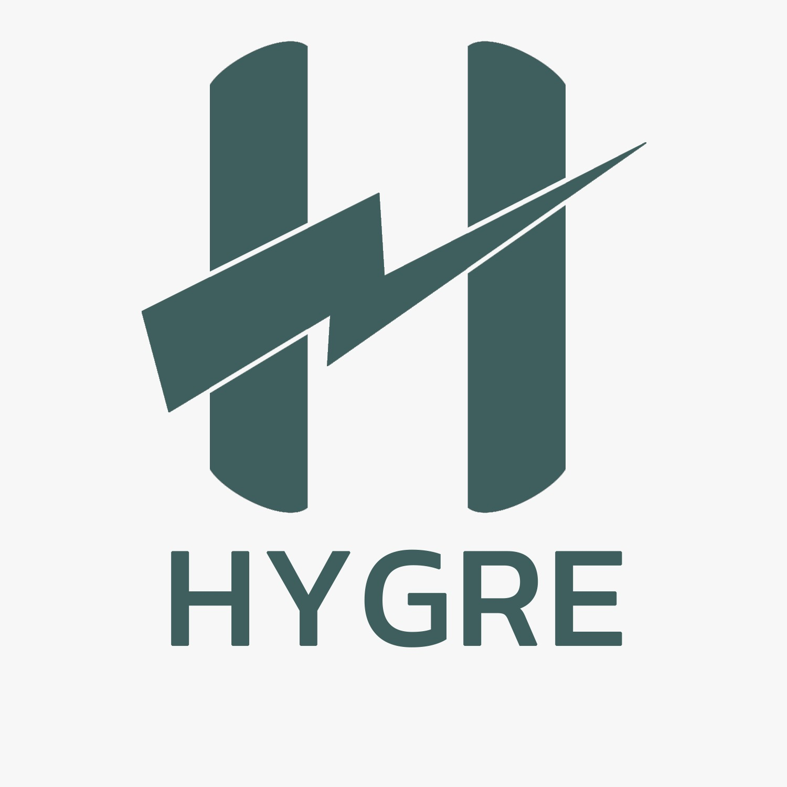

Fish Rearing
Fish cultivation forms an integrated part of the farming ecosystem.

HYGRE • INTEGRATED FARMING
Integrated fish and vegetable farming in a compact, environment-controlled system with remote monitoring and control.
Explore Our System →Hygre is an agritech startup developing integrated farming systems that bring fish cultivation, vegetable production, environmental control and technology together.
Our goal is to create practical farming systems that can operate efficiently in compact spaces while making better use of water, nutrients and available resources.
The system is designed to be adaptable — from dedicated farm spaces to smaller installations such as rooftops and terraces.
Hygre connects different parts of farming into a coordinated ecosystem, supported by environmental control and remote technology.
Fish cultivation forms an integrated part of the farming ecosystem.
Soil-less growing systems provide fresh vegetable production.
Water and nutrients move through a connected circulation system.
Environmental conditions can be managed for consistent crop growth.
Monitor important parameters and control equipment remotely.
Designed to work in compact areas, including suitable terraces.
03 / HYGRE MVP
04 / CONTACT
Interested in Hygre, our integrated farming system, or our MVP? Get in touch with us.